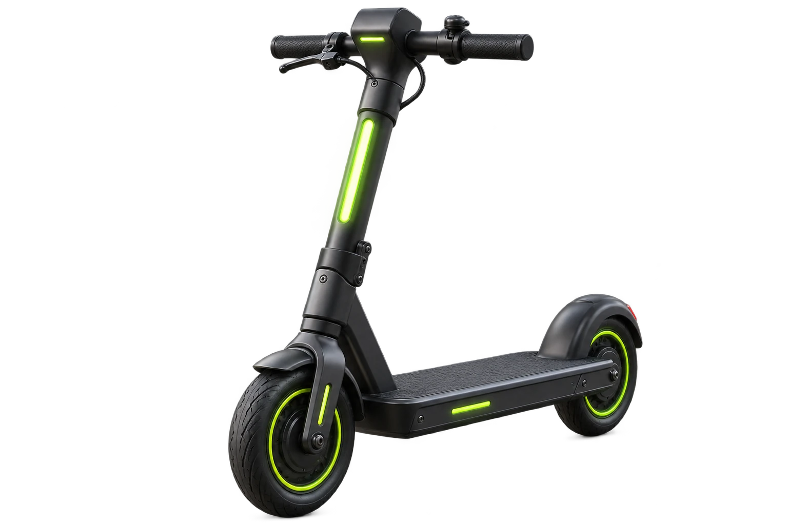
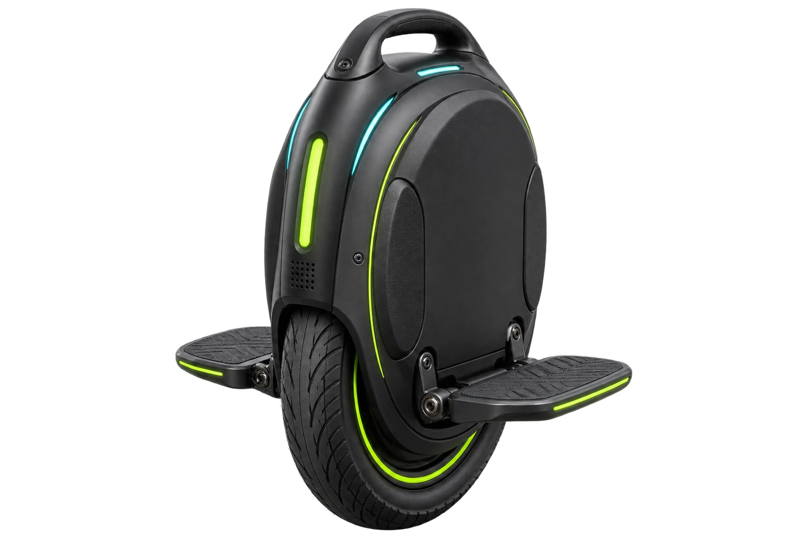
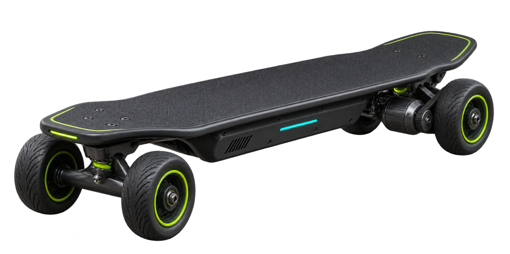

Сначала
познакомимся
Что такое СИМ, чем отличаются устройства и какие вопросы стоит задать перед первой поездкой.
Перейти к первому уроку


Что входит в знакомство
Разберёмся в СИМ
Уроки проходят по порядку. Здесь можно вернуться к уже изученной теме.
Браузер не разрешил сохранить отметки. В этой вкладке можно продолжать, но после её закрытия путь начнётся заново.
Пять видов устройствСравнивайте и раскрывайте описания
Ошибаться можноОбъяснение после каждого ответа
Ваши отметкиСохраняются в этом браузере